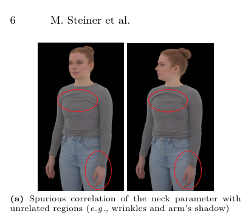
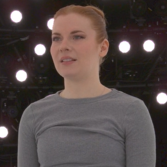
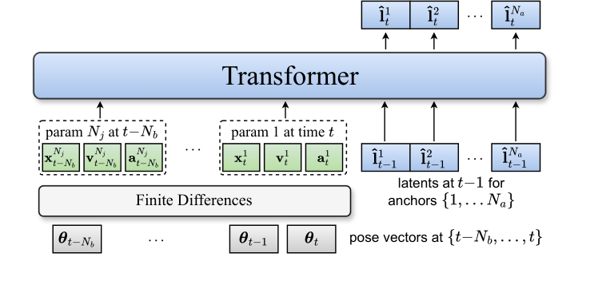
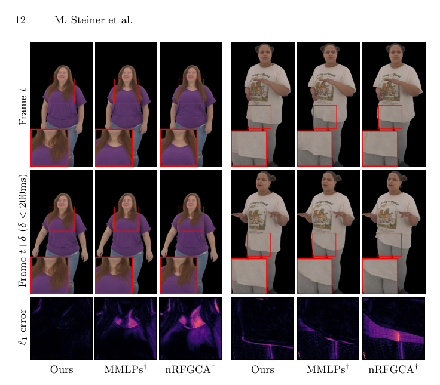

Autoregressive
简单摘要
逼真且身临其境的人类化身体验需要捕捉精细的、特定于个人的细节，例如衣服和头发的动态、微妙的面部表情和特征性的运动模式。实现这一目标需要大型、高质量的数据集，当非常相似的姿势对应于不同的外观时，这些数据集通常会引入歧义和虚假相关性。在训练过程中适合这些细节的模型可能会过度拟合，并为新姿势产生不稳定、突然的外观变化。我们提出了一个 3D 高斯 Splatting 化身模型，其空间 MLP 主干以姿态和潜在外观为条件。
编码器在训练期间学习潜伏，产生紧凑的表示，从而提高重建质量并有助于消除姿势驱动渲染的歧义。在驾驶时，我们的预测器自回归推断潜在的，产生暂时平滑的外观演变并提高稳定性。总的来说，我们的方法为高保真、稳定的化身驾驶提供了一条稳健且实用的途径。人体头像重建动画


简而言之，这篇论文关注的核心是：逼真且身临其境的人类化身体验需要捕捉精细的、特定于个人的细节，例如衣服和头发的动态、微妙的面部表情和特征性的运动模式。实现这一目标需要大型、高质量的数据集，当非常相似的姿势对应于不同的外观时，这些数据集通常会引入歧义和虚假相关性。在训练过程中适合这些细节的模型可能会过度拟合，并为新姿势产生不稳定、…
学习高保真、逼真的人物虚拟表征对于沉浸式体验有许多应用，例如虚拟现实 (VR)、远程呈现、视频游戏和电影。然而，制作一个能够忠实捕捉细节的特定人物化身——衣服和松散的头发动态、微妙的面部表情和特征性的运动模式——通常需要大量的多视图捕捉数据。长格式的捕捉通常会表现出姿势-外观的模糊性：相同的骨骼姿势在不同时间可能对应于明显不同的外观。例如，当重新调整衣服、头发以不同的方式固定或以新的方式形成皱纹时，就会发生这种情况。
强大的化身模型必须同时（i）表示高频、视图相关和非刚性效果，以及（ii）当驱动信号重新访问相似姿势时保持时间稳定。 3D 高斯泼溅 (3DGS) 的最新进展使其成为人类化身的有吸引力的表现形式。其基于点的结构提供了对复杂变形进行建模的灵活性，同时实现了高保真度重建，以捕获依赖于视图的效果和头发等薄结构。然而，增加模型容量会带来第二个密切相关的挑战：训练数据中的虚假相关性。例如，特定的手部配置可能与裤子上的特定皱纹图案相关，即使它不会导致外观变化。
高容量模型可以利用这种相关性并记住偶然的细节，从而导致新颖的姿势序列出现不稳定的外观变化和时间闪烁。我们提出了一种基于 3DGS 的头像模型，该模型可以解决虚假姿势相关性和姿势外观模糊性，同时保持高视觉保真度、动态效果和平滑的外观过渡。我们的方法建立在分层点表示的基础上：一组具有空间分布的 MLP 的稀疏锚点、引导位置位移的控制点以及一组表示剩余外观属性的密集 3D 高斯。为了减少不相关的姿态参数之间的虚假远程依赖性，我们仅根据从其锚点位置的蒙皮权重导出的局部姿态信息来调节每个空间 MLP。
虽然这种局部性提高了因果一致性，但它也使姿势-外观模糊性更加明显：仅局部姿势参数通常不足以确定正确的随时间变化的外观。为了解决这个歧义，我们引入了每帧外观潜在的c......
核心创新
综合引言与方法部分，这篇论文的核心创新可以概括为以下几方面：
1）问题定义与研究动机
学习高保真、逼真的人物虚拟表征对于沉浸式体验有许多应用，例如虚拟现实 (VR)、远程呈现、视频游戏和电影。然而，制作一个能够忠实捕捉细节的特定人物化身——衣服和松散的头发动态、微妙的面部表情和特征性的运动模式——通常需要大量的多视图捕捉数据。长格式的捕捉通常会表现出姿势-外观的模糊性：相同的骨骼姿势在不同时间可能对应于明显不同的外观。例如，当重新调整衣服、头发以不同的方式固定或以新的方式形成皱纹时，就会发生这种情况。强大的化身模型必须同时（i）表示高频、视图相关和非刚性效果，以及（ii）当驱动信号重新访问相似姿势时保持时间稳定。 3D 高斯泼溅 (3DGS) 的最新进展使其成为人类化身的有吸引力的表现形式。其基于点的结构提供了对复杂变形进行建模的灵活性，同时实现了高保真度重建，以捕获依赖于视图的效果和头发等薄结构。然而，增加模型容量会带来第二个密切相关的挑战：训练数据中的虚假相关性。例如，特定的手部配置可能与裤子上的特定皱纹图案相关，即使它不会导致外观变化。高容量模型可以利用这种相关性并记住偶然的细节，从而导致新颖的姿势序列出现不稳定的外观变化和时间闪烁。我们提出了一种基于 3DGS…
2）方法框架与核心模块
本节详细介绍我们的化身模型和驱动管道。我们首先对表示和调节策略进行高级概述（subsec：method_overview）。然后，我们描述如何在每个锚点构建局部姿势特征，以减轻虚假姿势-外观相关性并减少过度拟合（subsec：method_localization）。接下来，我们介绍我们的外观建模方法，包括训练期间学习的每帧潜在变量以及用于获取它的编码器（subsec：method_app_modeling）。最后，我们提出了在测试时使用的基于变压器的外观预测器，用于自动回归推断驾驶潜伏。（subsec：method_app_prediction）。概述 给定驾驶姿势参数和面部嵌入，我们的模型输出表示为一组 3D 高斯的姿势头像。我们遵循 的分层表示，使用一组稀疏锚点和空间分布的 MLP，从每个锚点输入预测高斯参数（用于可视化的图：hierarchie_viz）。所有点均在模板网格上进行初始化，接收用于线性混合蒙皮 (LBS) 的传输蒙皮权重和用于纹理空间查找的 UV 坐标。为了减少虚假的远程姿势相关性，每个锚点接收局部驱动特征：我们应用基于蒙皮权重的局部掩蔽来获得 ，并掩蔽面部 U…
3）实验设计与工程价值
我们在六个广泛的长形圆顶捕捉中评估了我们的方法，涵盖了一系列难度和动态外观效果。我们与 Zhan 等人的重新实现进行比较。 ，通过我们的局部面部嵌入和局部手/手指姿势调节进行增强，以进行公平的比较；我们将此基线表示为 MMLP。此外，我们还与类似于来自 Want 等人的 Relightable Full-Body Gaussian Codec Avatar (RFGCA) 模型的不可 relightable 版本的卷积解码器基线进行比较。 ---表示为 nRFGCA 。所有模型均在 PyTorch 中实现，并使用 gsplat 进行可微 3D 高斯渲染。数据集。我们的数据集包含六个圆顶捕捉，每个捕捉帧数为 30\,fps 的 30k 训练帧和 250 个同步训练摄像机，均匀分布在全身、上半身和下半身视图之间。每个捕捉都包含指导的动作序列和较少脚本的片段。用于训练和评估的所有图像（具有相应…
技术细节
下面按照论文的方法章节结构展开，重点说明模型的关键模块、公式设计和训练策略。
本节详细介绍我们的化身模型和驱动管道。我们首先对表示和调节策略进行高级概述（subsec：method_overview）。然后，我们描述如何在每个锚点构建局部姿势特征，以减轻虚假姿势-外观相关性并减少过度拟合（subsec：method_localization）。接下来，我们介绍我们的外观建模方法，包括训练期间学习的每帧潜在变量以及用于获取它的编码器（subsec：method_app_modeling）。最后，我们提出了在测试时使用的基于变压器的外观预测器，用于自动回归推断驾驶潜伏。（subsec：method_app_prediction）。概述 给定驾驶姿势参数和面部嵌入，我们的模型输出表示为一组 3D 高斯的姿势头像。我们遵循 的分层表示，使用一组稀疏锚点和空间分布的 MLP，从每个锚点输入预测高斯参数（用于可视化的图：hierarchie_viz）。所有点均在模板网格上进行初始化，接收用于线性混合蒙皮 (LBS) 的传输蒙皮权重和用于纹理空间查找的 UV 坐标。为了减少虚假的远程姿势相关性，每个锚点接收局部驱动特征：我们应用基于蒙皮权重的局部掩蔽来获得 ，并掩蔽面部 UV 区域之外以获得 。为了进一步稳定驾驶，我们使用根据训练集计算的 PCA 来约束姿势；重要的是，我们在训练和测试期间都应用了这种转换。由于单个全局 PCA 会纠缠远处的姿态参数，因此我们在七个身体区域上分别执行局部 PCA。最后，我们使用每帧局部潜在代码显式地对外观进行建模。在训练期间，我们使用卷积外观编码器将每帧 UV 纹理（通过多视图投影到模板网格上提取）编码为 2D 特征图，并使用每个锚点的 UV 坐标对其进行双线性采样以获得 。在测试时，当 UV 纹理通常不可用时，我们用变压器外观预测器替换编码器，该预测器从蒙版姿势的简短历史（以及之前的潜在）回归下一个潜在，从而在驾驶过程中实现平滑稳定的外观演变。我们的方法的完整概述可以在图：概述中看到。损失。 We train our model with a number of commonly used losses for human avatar reconstruction.
具体来说，我们使用光度损失、感知损失、鼓励非边界区域不透明的不透明度正则化器，以及阻止过大高斯的尺度正则化器。接下来，我们通过惩罚每个控制点的位移与其五个邻居的位移之间的差异来强制平滑变形，产生 。最后，我们通过 Kullback-Leibler 散度惩罚来鼓励行为良好且平滑的外观潜在空间。补充材料中提供了其他培训详细信息。总损失是局部姿势参数调节完整姿势向量上的每个锚点可能会引起远处表面区域参数之间的虚假相关性——头部旋转与……相关。
$$ \vect{\hat{\theta}}_i = \vect{m}^\theta_i \odot \vect{\theta}, \quad \vect{\hat{\phi}}_i = m^\phi_i \vect{\phi}, $$
s 并构造一个二元掩码 ，其中当且仅当任何非零蒙皮权重都会影响 。图：localization_mask_neck 显示了一个示例掩码。类似地，我们构造一个蒙版，如果锚点的纹理坐标位于面部区域内，则设置该蒙版。然后，锚 MLP 接收本地化姿势和面部嵌入......
$$ \mathcal{L}= \lossL{1} + \lossterm{lpips} + \lossterm{opac} + \lossterm{scale} + \lossterm{cpt} + \lossterm{KL}. $$
西安人。接下来，我们通过惩罚每个控制点的位移与其五个邻居的位移之间的差异来强制平滑变形，产生 。最后，我们通过 Kullback-Leibler 散度惩罚来鼓励行为良好且平滑的外观潜在空间。提供了其他培训详细信息……



把全文方法串起来看，这篇论文的逻辑基本都遵循同一条主线：先把输入组织成更容易处理的表示，再通过模型结构和损失函数把这个表示推向目标输出，最后用可视化与数值实验共同证明该设计有效。
实验结论
实验部分主要回答两个问题：第一，方法是否真的优于已有基线；第二，这种优势来自哪一个设计决策。
我们在六个广泛的长形圆顶捕捉中评估了我们的方法，涵盖了一系列难度和动态外观效果。我们与 Zhan 等人的重新实现进行比较。 ，通过我们的局部面部嵌入和局部手/手指姿势调节进行增强，以进行公平的比较；我们将此基线表示为 MMLP。此外，我们还与类似于来自 Want 等人的 Relightable Full-Body Gaussian Codec Avatar (RFGCA) 模型的不可 relightable 版本的卷积解码器基线进行比较。 ---表示为 nRFGCA 。所有模型均在 PyTorch 中实现，并使用 gsplat 进行可微 3D 高斯渲染。数据集。我们的数据集包含六个圆顶捕捉，每个捕捉帧数为 30\,fps 的 30k 训练帧和 250 个同步训练摄像机，均匀分布在全身、上半身和下半身视图之间。每个捕捉都包含指导的动作序列和较少脚本的片段。用于训练和评估的所有图像（具有相应的前景分割掩模）均以分辨率（从捕获的图像缩小 4）渲染。为了进行评估，我们在训练期间提供了 3k 帧和 6 个摄像头（4 个全身摄像头，加上 1 个正面上半身摄像头和 1 个正面下半身摄像头）。培训细节。 We train and evaluate all methods on 8 NVIDIA H200 GPUs with a total batch size of 64 for 100k iterations, resulting in 8--10 hours of training time.接下来，我们的和 MMLP 使用 300/10k/200k 点作为锚点/控制点/高斯。我们的外观模型使用潜在通道。我们使用 AdamW 进行优化，使用 、 和 ，并仅将权重衰减应用于空间 MLP 和外观编码器，使用 。损失权重设置为 , 。结果 我们展示了所有六次捕获的定量和定性结果。我们的评估重点是（i）每种方法对训练数据的过度拟合能力，（ii）我们的编码器泛化到看不见的纹理的能力，（iii）与基线虚假相关性和姿势外观模糊性相比，我们的外观预测器的时间稳定性和视觉合理性。我们强烈鼓励读者观看补充视频，因为在视频中比在静态图像或聚合指标中更容易观察到时间稳定性和运动动力学合理性的改进。定量的。我们报告标准重建指标，包括 PSNR、SSIM 和感知相似性指标 LPIPS。选项卡：结果总结了所有比较方法的训练和测试集性能。
在训练集上，我们的方法取得了最好的分数，这表明添加的结构（局部调节和外观潜伏）可以实现训练数据的高质量拟合。在测试集上，我们带有外观预测器的完整管道在总体上表现最佳......



- 方法在核心指标上的优势与结构设计和训练目标直接相关；
- 消融实验表明，拿掉关键模块后性能与结果质量都有明显回落；
- 论文不仅比较数值，也关注可视化质量、稳定性和泛化能力等更贴近真实使用的信号。
理解评价
虽然我们的外观预测器在大多数情况下会产生稳定且可信的结果，但仍然存在一些局限性。首先，尽管明确引入了外观潜伏，但我们当前的公式并没有完全将姿势驱动的效果与外观变化分开。在实践中，预测器可以吸收原则上可以从姿势确定性解释的因素。我们在实验中强制执行更严格的分离的努力（类似于）持续降低了重建质量并限制了模型拟合精细细节的能力。其次，严格局部的姿势调节不能代表某些远程交互，例如将手臂的阴影投射到躯干上。因此，这些效应可以被编码在潜在的外观中，这可能会降低极端分布外运动下的鲁棒性。
一个有前途的方向是通过显式的低频照明或阴影组件对远程着色进行单独建模，从而减轻外观代码的负担，并在推断超出训练分布时提高稳定性。最后，外观预测器的初始化目前很简单：当 UV 纹理可用时，我们要么使用编码器生成的代码，要么回退到固定的零代码。尽管预测器经过训练可以在前几帧中从该设置中恢复，但它在达到一致的外观之前引入了短暂的“加速”期。虽然这可以对用户隐藏，但更原则性的生成初始化（以第一个姿势为条件）可以产生逼真的初始外观，而不需要这种热身。
因此，未来的工作应该侧重于更强的姿势-外观解开、远程阴影效果的显式建模以及改进……
如果把它当成研究参考，建议重点关注三件事：第一，这套方法真正依赖的归纳偏置是什么；第二，实验中真正拉开差距的模块是哪一个；第三，它的局限究竟来自数据、算力还是监督信号本身。
以下相关论文可以作为进一步追踪的入口：